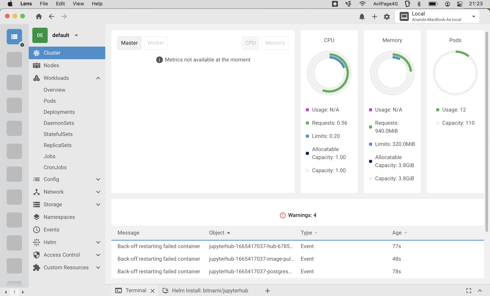

Local Kubernetes Cluster with K3s on Mac M1
Introduction
Kubernetes(k8s)1 is an open-source system for managing large scale containerized applications. K3s2 is lightweight K8s in a single binary file. However, K3s won't work directly on Macbook as it needs systemd/OpenRC.
$ curl -sfL https://get.k3s.io | sh - [ERROR] Can not find systemd or openrc to use as a process supervisor for k3s
To setup k8s/k3s on Mac, we need to setup a Linux layer on top of Mac. An easy way to spin up Linux VMs on Macbook M1(Apple Silicon) is to use multipass3. In this article, lets see how to setup K3s on Mac using multipass
K3s Setup
Install multipass with brew by running the following command.
$ brew install --cask multipass
Once it is installed, spin up a new VM by specifying memory and disk space.
$ multipass launch --name k3s --mem 4G --disk 40G
Once VM is launched, we can see VM details.
$ multipass info k3s Name: k3s State: Running IPv4: 192.168.64.4 10.42.0.0 10.42.0.1 Release: Ubuntu 22.04.1 LTS Image hash: 78b5ca0da456 (Ubuntu 22.04 LTS) Load: 1.34 2.10 1.70 Disk usage: 3.7G out of 38.6G Memory usage: 1.2G out of 3.8G Mounts: /Users/chillaranand/test/k8s => ~/k8s UID map: 503:default GID map: 20:default
We can even mount Mac directories on the VM.
$ multipass mount ~/test/k8s k3s:~/k8s
This will be useful when we are making changes on host directories and want to apply changes on the cluster which is inside VM.
Now, we can install k3s by running the install script inside the VM.
$ multipass shell k3s
ubuntu@k3s:~$ curl -sfL https://get.k3s.io | sh -
This will setup a k3s cluster on the VM. We can use kubectl and deploy applications on this cluster.
By default, k3s config file will be located at /etc/rancher/k3s/k3s.yaml. With this config file, we can use Lens4 to manage k8s cluster.

Lets find out IP of the VM & k8s token so that we can spin up a new VM and add it to this cluster.
# get token & ip of k3s $ multipass exec k3s sudo cat /var/lib/rancher/k3s/server/node-token $ multipass info k3s | grep -i ip
$ multipass launch --name k3s-worker --mem 2G --disk 20G $ multipass shell k3s-worker ubuntu@k3s-worker:~$ curl -sfL https://get.k3s.io | K3S_URL=https://192.168.64.4:6443 K3S_TOKEN="hs48af...947fh4::server:3tfkwjd...4jed73" sh -
We can verify if the node is added correctly from k3s VM.
ubuntu@k3s:~$ kubectl get nodes NAME STATUS ROLES AGE VERSION k3s Ready control-plane,master 15h v1.24.6+k3s1 k3s-worker Ready <none> 7m15s v1.24.6+k3s1
Once we are done with experimenting k3s, we can delete the VMs.
$ multipass delete k3s k3s-worker $ multipass purge
Conclusion
multipass is a great tool to spin up Linux VMs on Mac with single command. K3s is better tool to setup k8s cluster locally for development and testing.
Even though we have mentioned this tutorial is meant for Mac M1, it should work fine on any Linux distribution as well.